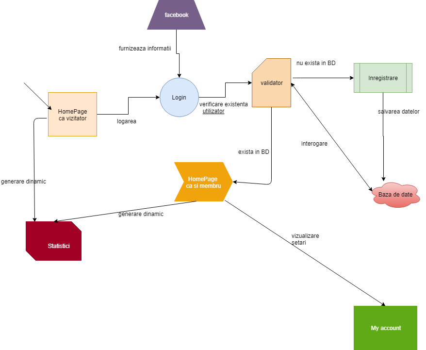
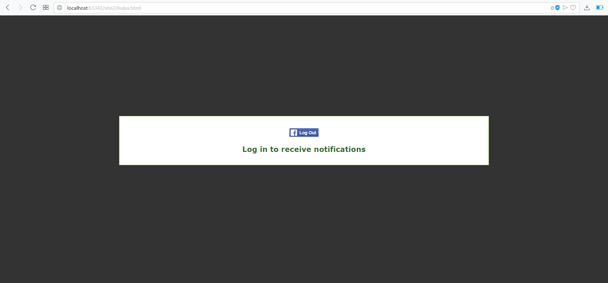
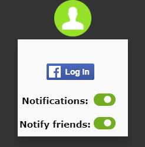
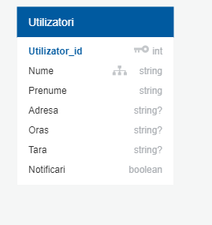

SEAL
Github authors
Project description
This project aims to alert its users to possible allergies in its area and to generate dynamic statistics for these allergies.When you agree to receive notifications, the application will also pick up your list of friends on facebook to inform them about allergies. The notification process - within the web browser - will take a certain priority or frequency. Priority will be set depending on how old you are in the system
Architecture
Diagram1: The architecture
Project development stages
The project has 2 main development stages:
- The development of a Web Interface
- The development of the functionality of the interface
1.The Web interface
The Web Interface refers to the visual aspects of the website.At this step the design of the website is conceived. The implementation of the design is done using front end languages like Html,Css and Javascipt.
2.The functionality of the interface
The main functionalities of the website are:
- Registration and login/logout: The user has the ability to create an account and log into it by using his/hers facebook account.
This functionality is implemented using a login API from Facebook. When clocking on the Login button, a pop up window will appear on the screen, which will show the
user that information the website will take from his/her account and will have the possibility to accept or decline the use of his/hers account data. After accepting
the data will be saved into a database. This is necessary because without saving the user information into a database, there is no way of knowing which user has
registered or accepted to receive notifications.

- Information: This will provide statistics about the data collected. The statistics will be displayed in a 2D/3D format using SVG and WebGL.
-
Notifications: The users will receive in browser notifications about the spread of seasonal allergies. The notifications will also be sent
to the user's friends. The order in which notifications are sent will be determined by how dangerous or common the allergy is. The notifications will also provide the user
with information about allergies(e.g. how to prevent them) via external data which will be loaded on the website if the user will request it. This will be done by
loading the content of web pages(which were preselected) using AJAX.
The user will also have the possibility to switch notifications on/off through the profile drop-down menu on the upper side of the page

Data modeling
We'll create a table using the MySql database management system which contains all the information we need about our users. People can connect to our web page with their Facebook account, which allows our application to collect data using the Facebook API and insert them into our table.
We will have a single table in which we will save all the necessary data.
For out data to be more organised we used the tag because it allows browsers to understand the information on the web page so it can reach more users.

Local storage
Our users connect to out website using their Facebook account. Because of that we don't need to use local storage or cookies because all the data about our users can be extracted and saved locally using the Facebook API.